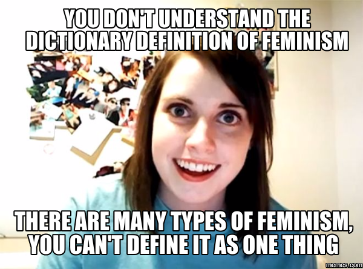
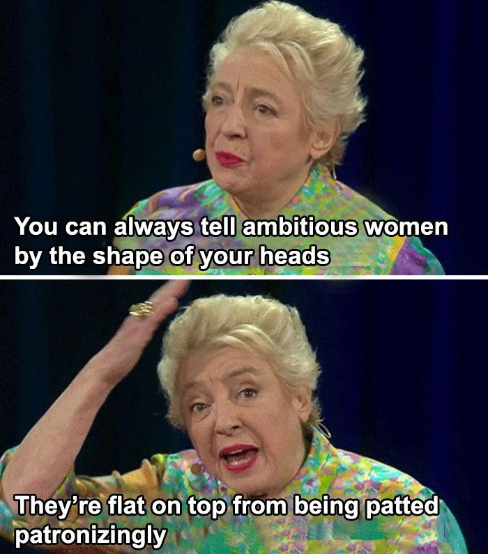
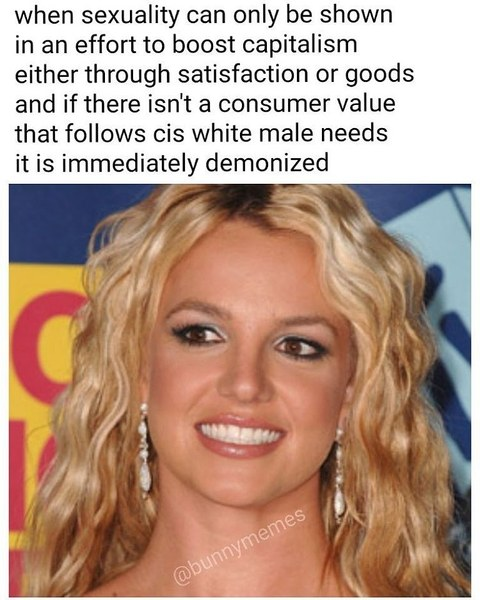

Scenario Quiz: Let's change the world one (Microfeminism) step at a time!
Welcome
Welcome Page
Play Game
Play Game
Works Cited
Works Cited Page
1 / 3

From @WomAgainstFem on X, January 8, 2016
2 / 3

From boredpanda.com on Pinterest
3 / 3

From "Feminist memes: should we share them?", January 26, 2017
❮
❯